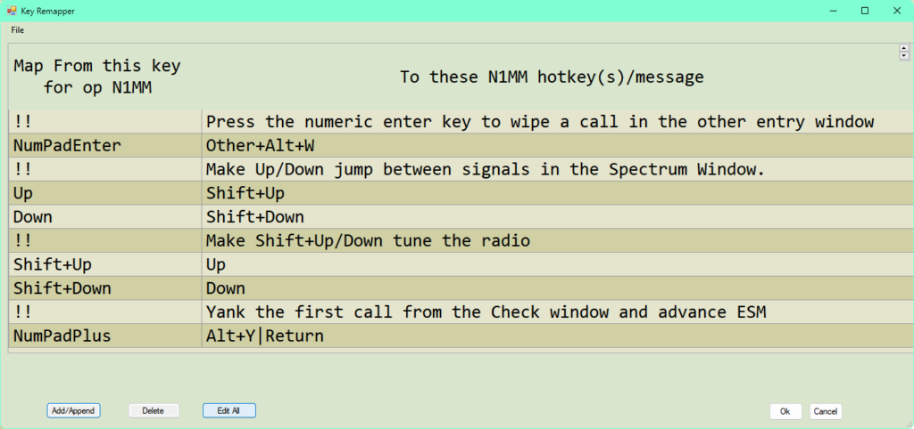

Key Assignments – Keyboard Shortcuts EN: Keyboard Shortcuts
- Key Assignments Short List
- General Key Assignments
- Active Radio/Bandmap Control Key Assignments
- Non-Active Radio/Bandmap Control Key Assignments
- Logging Key Assignments
- Callsign/Exchange Editing Features
- Message Key Assignments
- CW Key Assignments
- Enter Sends Message Mode (ESM)
- Telnet Key Assignments
- Available Window Key Assignments
- SO2R Key Assignments
- RTTY Key Assignments
- Gridsquare Key Assignments (VHF and up)
- Rotator Key Assignments
- Window Key Assignments
- Lookup Table Edit
- QTC Keys (for WAE contests)
- Key Mapping
Key Assignments Short List (Lista Resumida de Atalhos)
Tabela de teclas de atalho por modo de operação (RUN x S&P)
| Teclas de Running | Teclas de S&P |
| F1 = CQ | Shift+F1 = Chamar CQ e trocar para Run |
| ; ou Insert = Enviar indicativo e relatório | Alt+U = Alternar S&P/Run. Define a frequência de CQ para o "pass" |
| ' = Enviar mensagem de TU e logar | Alt+Q = Voltar à frequência de CQ |
| Alt+R = Habilita repetição de CQ | Ctrl+seta cima/baixo = Pega o próximo QSO do bandmap |
| Ctrl+R = Define o tempo de repetição | Ctrl+Alt+seta cima/baixo = Pega o próximo multiplicador do bandmap |
| Esc = Para o envio, para a repetição | – |
| Teclas gerais | Controle de rádio |
| Ctrl+O = Define o indicativo do operador (ou OPON no campo de indicativo) | Alt+F10 = Troca os VFOs |
| Ctrl+N = Adiciona nota ao log | Alt+Q = Volta à frequência de CQ |
| Ctrl+W ou Alt+W = Limpa os campos de entrada. Libera um número serial reservado. Ctrl+W é irreversível; Alt+W pode ser revertido digitando de novo | Alt+F8 = Volta à última frequência |
| ESPAÇO ou TAB = Move entre os campos de log. Espaço pula os campos de RST; Tab passa por eles | Ctrl+PgUp/PgDn = Sobe/desce uma banda |
| ENTER = Loga o contato (veja o modo ESM) | Digitar CW/USB/LSB/RTTY = Muda o modo; digitar frequência em kHz = muda a frequência ou banda |
| Ctrl+Q/A = Edição rápida do QSO anterior ou seguinte | Ctrl+S = Coloca o rádio em split; Ctrl+Alt+S = Alterna o modo split |
| Ctrl+D = Apaga o último QSO. Pede confirmação | Ctrl+Enter = Define a frequência de split |
| Alt+H = Mostra a ajuda | Alt+F7 = Define a frequência de split ou offset para a frequência indicada |
| Alt+K = Edita os botões de mensagem | Alt+' = Alterna entre os filtros largo e estreito |
| Ctrl+Alt+Enter = Loga um QSO não aceito (exchange inválido, geralmente) | Alt+F12 = Copia frequência e modo para o outro rádio/VFO. Há diferenças específicas por rádio |
| – | Barra invertida ( \ ) = Muda o foco de recepção (RX) (VFO/rádio) |
| Spots de DX e Bandmap | Modo ESM |
| Roda do mouse = Zoom in/out no bandmap | Ctrl+M = Liga/desliga |
| Teclado numérico +/- = Zoom in/out no bandmap | Insert ou ; = Envia indicativo e exchange |
| Alt+D = Remove o spot exibido no quadro de indicativo ou no campo de indicativo | Enter = Envia TU e loga |
| Alt+P = Envia spot | Enter = Começa o CQ de novo... |
| Ctrl+P = Envia spot com comentário | Alt+Enter = Loga sem enviar nada |
| Ctrl+Tab = Alterna para/da janela de packet | Modo Multi-Usuário |
| Alt+O = Guarda o contato no Bandmap | Alt+Z = Define a frequência de "pass" (transmite para todos os computadores) |
| Alt+Q = Pula para a frequência de CQ nesta banda | – |
| SO2R | Rádios específicos / Controle de rotor |
| Barra invertida ( \ ) – Dois rádios = Muda o foco de recepção (RX) | FT-1000MP + FT1000D + alguns rádios Icom com Dual Watch: Alt+F12 = Alterna Dual Receive |
| Pause = Troca o foco de Transmissão e Recepção/Teclado | – |
| Ctrl+Enter = Envia o próximo estado do ESM no rádio alternativo | TenTec Orion: Alt+F12 = Alterna Main/Sub esquerda/direita e ativo nos dois ouvidos |
| Ctrl+F1 a F12 = Envia mensagem no rádio alternativo | – |
| Ctrl+B = CQs duelando (Dueling CQ's) | Controle de rotor para o indicativo na Entry window |
| ` (acento grave) = Alterna Estéreo/Mono (pino 5 da LPT) | Alt+J – Gira o rotor para o rumo |
| Alt+L – Gira o rotor para o rumo de caminho longo (long path) | – |
| – | Ctrl+Alt+J – Para o giro do rotor |
Tabela de teclas de atalho por modo de transmissão
| CW | SSB | RTTY | VHF |
| Page Up = aumenta velocidade | Ctrl+Shift+F1 = Grava CQ | Alt+G = Pega indicativo da pilha | Alt+menos = Alterna grids |
| Page Down = diminui velocidade | Ctrl+Shift+F* = Grava mensagem de tecla de função | Alt+T = Alterna RX/TX | Ctrl+E = Envia mensagem às estações |
| = = reenvia a última tecla de função | NB. As mesmas teclas de novo param a gravação | Ctrl+setas = Troca de DI | – |
| Shift+Fx = envia a Fx do modo oposto | Idem | Idem | Idem |
| Ctrl+K = alterna a janela de CW | – | Ctrl+K = alterna a janela manual | Alt+Z = Define a frequência de "pass" |
| Esc = Para o envio imediatamente e fecha a janela | – | Esc = Para o envio imediatamente e fecha a janela | – |
Nota: as teclas abaixo funcionam a partir de todas as janelas principais
General Key Assignments (Atalhos Gerais)
- Space – A barra de espaço pula de campo em campo, preenchendo padrões como o indicativo do quadro de chamada, 59/599, e informações de contatos anteriores com aquela estação. Pula os campos de relatório de sinal. ESPAÇO É O CARACTERE DE TABULAÇÃO PREFERIDO.
- Tab – Pula para o próximo campo de entrada na Entry Window, incluindo os campos de relatório de sinal (o dígito "S" do relatório fica destacado, para facilitar sobrescrever, por exemplo trocar 599 por 579 etc.)
- Shift+Tab – Pula para o campo de entrada anterior na Entry Window
- Alt+H – abre a ajuda on-line. A maioria das janelas tem ajuda específica de contest acessível pelo menu de botão direito
- Ctrl+Tab – Alterna entre a Entry window e a janela Packet
- Alt+F9 – alterna entre todas as antenas definidas para a banda atual. A antena selecionada aparece no canto inferior esquerdo do painel de status
- Alt+F4 – Fecha o programa. Com duas Entry windows (SO2R), o programa não fecha direto; você será perguntado se tem certeza
Active Radio/Bandmap Control Key Assignments (Atalhos de Controle do Rádio/Bandmap Ativo)
Jump to Spots (Pular entre Spots)
Nota: se você está operando em modo único, o modo não muda ao pular entre spots.
- Ctrl+seta baixo – Pega o próximo spot mais alto em frequência
- Ctrl+seta cima – Pega o próximo spot mais baixo em frequência
- Ctrl+Alt+seta baixo – Pega o próximo spot mais alto em frequência que seja multiplicador
- Ctrl+Alt+seta cima – Pega o próximo spot mais baixo em frequência que seja multiplicador
- Shift+Alt+seta cima – Pega o próximo spot mais baixo em frequência que seja autospot (self-spotted)
- Shift+Alt+seta baixo – Pega o próximo spot mais alto em frequência que seja autospot
Jump to CQ Frequencies (Pular para Frequências de CQ)
- Alt+Q – Pula para a última frequência de CQ nesta banda (bandmap ativo) e limpa todos os campos de texto da Entry Window
- Shift+Alt+Q – Pula para a última frequência de CQ na outra banda (bandmap não ativo)
- Ctrl+Alt+Q – Pula para a sua última frequência de CQ usada, em qualquer banda, e sintoniza o bandmap ativo nela
- Alt+F8 – Volta para a sua frequência anterior (pode ser usado para "desfazer" o Alt+Q)
Tune the Radio (Sintonizar o Rádio)
- Ctrl+Page Up – Sobe uma banda. Bandas WARC são puladas durante o log de um contest
- Ctrl+Page Down – Desce uma banda. Bandas WARC são puladas durante o log de um contest
- Seta cima – Sintoniza o rádio 100 Hz abaixo em SSB, 20 Hz em CW (ajustável no Configurer)
- FT-1000MP, FT-890, FT-920, FT-990, FT-1000 e muitos outros rádios
- Em S&P – pressionar as setas cima/baixo desliga o RIT e sintoniza o VFO principal
- Em modo Running – liga o RIT e sintoniza o RIT
- FT-1000MP, FT-890, FT-920, FT-990, FT-1000 e muitos outros rádios
- Seta baixo – Sintoniza o rádio 100 Hz acima em SSB, 20 Hz em CW (ajustável)
- Veja as informações da Seta cima acima
- Roda do mouse – Com o mouse na Entry Window, faz QSY no rádio usando o mesmo incremento das setas cima/baixo
- Alt+roda do mouse – Com o mouse na Entry Window, faz QSY para a próxima frequência redonda, arredondada para 1 kHz
- Ctrl+roda do mouse – Idem, arredondado para 10 kHz
- Ctrl+Alt+roda do mouse – Idem, arredondado para 100 kHz
- Alt+F7 – Define a frequência de split ou o offset a partir da frequência atual, para o rádio ativo. Pressionar Enter ou clicar OK com a linha vazia limpa o split. Pressione ESC ou clique Cancel para sair. Mais informações sobre operação split no capítulo Single Operator Split Operation
- Ctrl+Enter – Informar uma frequência ou offset no campo de indicativo e confirmar com Ctrl+Enter define uma frequência de split
- Alt+S – Com o rádio em modo split, Alt+S retorna a frequência de RX para a frequência de transmissão, mas mantém o modo split. "Reset RX frequency when running split" está associado ao Alt+S; quando ativado, o programa faz um Alt+S automático a cada QSO logado. Funciona só no VFO-A!
- Ctrl+S – Coloca o rádio em operação split, se ainda não estiver
- Ctrl+Alt+S – Alterna o modo Split no rádio. "Split" aparece na Entry window
- Alt+F5 – Troca frequência, modo e indicativos entre VFOs (SO2V) ou rádios (SO2R). Em SO2R, o foco de recepção muda para o rádio não ativo
- Alt+F6 – Comando exclusivo de SO2R. Idêntico ao Alt+F5, exceto que o foco de recepção não muda
- Alt+F8 – Pula para a sua última frequência
- Alt+' (Alt+aspas simples) – alterna entre o filtro largo e estreito do modo selecionado (SSB, CW e modos Digi)
- Ctrl+Alt+D – Permite ao usuário em SO2V habilitar repetição de CQ, chamar CQ no VFOA e sintonizar o subreceptor (VFOB) entre os CQs. Atualmente só habilitado para K3, IC756, IC756Pro, IC756Pro2, IC756Pro3, IC7800 e IC7600
- Se "Sub Receiver Always On" estiver ON e o Sub RX estiver ON, desliga "Sub Receiver Always On" e mantém o Sub RX ligado
- Se "Sub Receiver Always On" estiver ON e o Sub RX estiver OFF, desliga "Sub Receiver Always On" e mantém o Sub RX desligado
- Se "Sub Receiver Always On" estiver OFF e o Sub RX estiver ON, liga "Sub Receiver Always On" e mantém o Sub RX ligado
- Se "Sub Receiver Always On" estiver OFF e o Sub RX estiver OFF, liga os dois
Change Keyboard & Radio Focus (Trocar o Foco do Teclado e do Rádio)
- Ctrl+seta esquerda – Move o foco de TX e RX/Teclado para o VFO A ou, em SO2R, para o rádio esquerdo
- Ctrl+seta direita – Move o foco de TX e RX/Teclado para o VFO B ou, em SO2R, para o rádio direito
- Alt+F10 – Alterna entre VFOs com um único rádio (VFO A-B). Em Icom 756 e 7800, alterna entre as frequências Main e Sub
- Comando desabilitado durante SO2R em rádios Icom sem comando CAT de troca de VFO, pois o programa não conhece a frequência do VFO B do Icom em modo SO2R
- Pause – Troca os rádios e ajusta o teclado ao rádio
- Barra invertida ( \ ) – Move o foco de RX e abre uma segunda Entry Window, se só uma estiver aberta (não suportado em SO1V)
- SO2V – Um rádio, 2 VFOs – Move o foco de RX entre os 2 VFOs do rádio
- SO2R – Dois rádios – Move o foco de RX entre os 2 rádios
Other Nifty Tricks (Outros Truques Úteis)
- Teclado numérico + (mais) – Aumenta o zoom do bandmap com foco de TECLADO, mostrando menos estações (menos largura de banda)
- Também é possível dar zoom com a roda do mouse sobre a janela Bandmap
- Teclado numérico - (menos) – Diminui o zoom do bandmap com foco de TECLADO, mostrando mais estações (mais largura de banda)
- Também é possível diminuir o zoom com a roda do mouse sobre a janela Bandmap
- Ctrl+T – Liga o rádio e envia CW contínuo (tune). Ctrl+T de novo, ou a tecla Escape, encerra a transmissão
- Alt+F12 – Na maioria dos rádios, copia frequência e modo para o outro rádio/VFO
- Alguns rádios usam Alt+F12 para funções específicas, geralmente trocando MAIN e SUB via comando CAT
- Somente FT-1000MP, FT1000D, Elecraft K3 e Icom IC-756, IC-781, IC-775 e IC-7800
- Alterna o Dual Receive. Nota: só ligue/desligue o Dual Receive pelo teclado, para manter a sincronia com o programa
- TenTec Orion
- Alterna entre Main/Sub esquerda/direita e ativo nos dois ouvidos
- ` (acento grave)
- Em modo SO2R, alterna Estéreo/Mono (pino 5 da LPT). Se o MK2R ou OTRSP estiver habilitado, envia comandos de estéreo ao controlador SO2R externo
- Em modo SO2V, alguns rádios com Dual Rx têm funções específicas atribuídas a esta tecla. Veja a seção Supported Radios para detalhes
- Em modo SO1V, alguns rádios com Dual Rx têm funções específicas nesta tecla, como habilitar o subreceptor. Caso contrário, esta tecla fica desabilitada em SO1V
- O acento grave corresponde, em teclados dos EUA, ao til (~) sem Shift
- = (sinal de igual) – Reenvia a última tecla de mensagem (F1-F12)
- Alt+F11 – Desabilita/habilita a troca automática entre RUN e S&P. Em ambiente de rede com mais de uma estação em RUN na mesma banda, a troca para S&P precisa ser desabilitada. Também usado em DXpeditions, para permanecer sempre em Run e não pular sem querer para S&P ao fazer um pequeno QSY sem chamar CQ. Esse comportamento é alternado pela tecla Alt+F11, e o estado aparece na barra de status da Entry window: "Run/S&P auto-toggle disabled" ou "S&P and Run Mode enabled"
Non-Active Radio/Bandmap Control Key Assignments (Atalhos do Rádio/Bandmap Não Ativo)
Jump Non-Active Radio to Spots (Pular Spots no Rádio Não Ativo)
- Ctrl+Shift+seta baixo – Pega o próximo spot mais alto em frequência, pulando a frequência de CQ quando os rádios/VFOs estão na mesma banda. O comportamento exato depende do rádio. Desabilitado em SO1V
- Ctrl+Shift+seta cima – Pega o próximo spot mais baixo em frequência, pulando a frequência de CQ quando os rádios/VFOs estão na mesma banda. O comportamento exato depende do rádio. Desabilitado em SO1V
- Shift+Ctrl+Alt+seta baixo – Pega o próximo spot mais alto em frequência que seja multiplicador. Em modo único, o modo não muda ao pular entre spots. Desabilitado em SO1V
- Shift+Ctrl+Alt+seta cima – Pega o próximo spot mais baixo em frequência que seja multiplicador. Em modo único, o modo não muda ao pular entre spots. Desabilitado em SO1V
- Shift+Alt+Q – Pula para a sua última frequência de CQ no VFO/rádio inativo
Tune the Non-Active Radio (Sintonizar o Rádio Não Ativo)
- Ctrl+Shift+Page Up – Sobe uma banda
- Ctrl+Shift+Page Down – Desce uma banda
- Shift + teclado numérico + (mais) – Aumenta o zoom do bandmap inativo
- Shift + teclado numérico - (menos) – Diminui o zoom do bandmap inativo
Logging Key Assignments (Atalhos de Log)
- Enter
- Loga o contato, quando "Enter sends message" está desligado no menu Config
- Envia a mensagem quando "Enter sends message" está ligado no menu Config. A mensagem enviada depende do campo em que o cursor está na Entry Window. Confira as teclas destacadas
- Space – Caractere preferido para mover sequencialmente pelos campos da Entry Window
- Pula do indicativo para o campo Exchange, ou vice-versa
- Preenche os valores padrão dos demais campos
- Se houver um indicativo no quadro de chamada e o campo de indicativo estiver vazio, o indicativo do quadro é colocado na caixa de texto de indicativo
- Alt+Enter – Envia a tecla de fim de QSO e loga o contato. Em ESM, apenas loga o contato (nada é enviado)
- Insert ou ; – Envia a His Call key seguida da Exchange key
- ' – Envia a mensagem de fim de QSO e loga o contato
- Alt+W (reversível) ou Ctrl+W (irreversível)
- Limpa os campos de entrada, apagando as informações do contato atual
- (somente Alt+W) Se nada novo foi digitado desde a última limpeza e todos os campos ainda estão vazios, Alt+W restaura o último contato limpo (função "unwipe"), a menos que a limpeza original tenha sido feita com Ctrl+W (irreversível)
- Em contests de número serial: libera o número serial reservado anteriormente
- Ctrl+Shift+W – Limpa as informações de contato da outra janela
- Ctrl+Alt+Enter – Loga um QSO não aceito/"inválido" (exchange inválido etc.). Vai pedir um comentário. Use "View | Notes" para localizar o QSO depois e corrigi-lo
- Se nenhum comentário for informado, "Forced QSO" é adicionado ao campo de comentário
- Ctrl+Y – Edita o último contato
- Ctrl+D – Apaga o último contato
- Alt+O – Guarda o contato no bandmap
- Alt+M – Marca esta frequência no bandmap como em uso
- Alt+D – Remove do bandmap o spot que está no quadro de chamada ou no campo de indicativo da Entry window, em S&P, ou na frequência de CQ, em Run
- Alt+Shift+D – Remove do bandmap o spot que está no quadro de chamada ou no campo de indicativo, e o adiciona à lista negra (blacklist) de spots. É preciso habilitar o filtro de blacklist para que isso tenha efeito
- Ctrl+F – Busca no log o indicativo digitado no campo de indicativo. Pressionar Ctrl+F de novo busca a próxima ocorrência
- Ctrl+M – Habilita/desabilita o modo "Enter sends message"
- Ctrl+N – Adiciona uma nota/comentário ao seu último ou atual contato
- Ctrl+Q – Modo de edição rápida, volta um QSO no log. Enter loga, Escape descarta as alterações. Sem checagem de conteúdo!
- Ctrl+A – Modo de edição rápida, avança um QSO no log. Enter loga, Escape descarta as alterações. Sem checagem de conteúdo!
- Ctrl+U – Aumenta em 1 o número no campo de exchange
- Alt+U – Alterna a caixa "Running". Quando marcada, o comportamento do modo Enter Sends Message muda de acordo, e os contatos são logados como parte de um run
- Alt+K – Altera o conteúdo dos botões de mensagem de Packet/CW/SSB/Digital
- Alt+Y – "Puxa" (yank) o primeiro indicativo da janela Check para o campo de indicativo da Entry window
- Ctl+G – Alterna o modo cut number
- Ctrl+Alt+G – Empilha indicativos adicionais em todos os modos. Equivale à macro {STACKANOTHER}
- Ctrl+Alt+M – Alterna entre Run/Mult (Multi-1) ou Run1/Run2 (Multi-2)
- Ctrl+Shift+M – Define o limiar de Autosend. O Autosend começa a enviar o indicativo antes de você terminar de copiá-lo por completo, ou seja, depois de digitado um certo número de caracteres APÓS o último número do indicativo. O limiar mínimo é 1; zero desativa o recurso. Só funciona em modo RUN, e é desabilitado em SSB quando TTS (texto para voz) gera as mensagens
- As regras do Autosend são:
- Encontra a primeira letra no indicativo
- Encontra o último número após a primeira letra
- Encontra a N-ésima letra após o passo 2
- Por exemplo, com limiar definido como 2:
- W4WYP começaria a enviar no Y
- S57AD começaria a enviar no D
- KH6/WA4WYP começaria no Y (usando também a regra da "/")
- WA4WYP/4 começaria no Y (o /4 não é considerado)
- WYP, WWYP e WAWYP não atendem aos critérios para o Autosend começar
- Prefixos como KH6/ são ignorados e não disparam o limiar do Autosend por si só
- As regras do Autosend são:
| Tecla | Tecla(s) de função enviada(s) | Ação(ões) |
| Insert | His Call Key e Exchange Key | Envia o indicativo dele seguido do exchange |
| ; | His Call Key e Exchange Key | Envia o indicativo dele seguido do exchange |
| Alt+Enter | – | Loga o contato |
| ' | End of QSO Key e loga o contato | Envia a mensagem de fim de QSO e loga o contato |
Callsign/Exchange Editing Features (Edição de Indicativo/Exchange)
- Barra de espaço – Move o cursor para a última posição em que estava antes de sair dos campos de Indicativo ou Exchange
- Ctrl+Barra de espaço – Com o cursor no campo de indicativo, alterna a seleção entre as três partes do indicativo — prefixo alfanumérico, número e sufixo alfabético. Facilita corrigir erros, permitindo focar só na parte que precisa de correção
- Tab – Move para o próximo campo
- Shift+Tab – Move para o campo anterior
- Home – Move o cursor para o início do campo atual
- End – Move o cursor para o fim do campo atual
- Interrogação (?) – Envia um ?, que fica destacado ao reentrar no campo. Ex.: N?MM envia o que foi digitado, mas destaca automaticamente o ? para ser substituído. Um duplo ?, como em DL?K?A, destaca tudo entre e incluindo os pontos de interrogação. O primeiro caractere digitado substitui os três
- Seta esquerda/direita – Move o cursor uma posição para a esquerda ou direita dentro do campo
- Backspace – Apaga o caractere à esquerda
- Delete – Apaga o caractere à direita
- Shift+Home – Destaca do ponto de inserção até o início da caixa de texto
- Shift+End – Destaca do ponto de inserção até o fim da caixa de texto
- Shift+seta – Destaca conforme você pressiona as teclas. Ao digitar o primeiro caractere, o texto destacado é apagado
- Ctrl+C/Ctrl+Insert – Copia para a área de transferência
- Ctrl+V/Shift+Insert – Cola da área de transferência
- Ctrl+Home – Força o cursor para o campo de indicativo e seleciona seu texto
As ferramentas de copiar/colar acima ajudam a mover estações de banda em banda. Destaque o indicativo atual com Shift+Home/End e copie com Ctrl+C. Loga o QSO, depois mude de banda para trabalhar a estação. Use Ctrl+V para inserir o indicativo dele no campo de indicativo. Se depois você o mover para uma terceira banda, pode pular a etapa de copiar, pois o indicativo já está na área de transferência.
Message Key Assignments (Atalhos de Mensagem)
Existem dois conjuntos de mensagens guardados para F1 a F12, um para o modo Running e outro para Search and Pounce. Porém, é possível enviar a mensagem do modo oposto pressionando Shift+Fx. As atribuições abaixo valem para os dois modos.
Abaixo, uma tabela das teclas de função com suas mensagens padrão associadas. Note que a tecla CQ sempre muda o programa para o modo Running, independente do modo em que estava. Todas as teclas listadas na tabela são usadas pelo ESM. As teclas His Call, Exchange e End of QSO são acionadas pelos atalhos de log (tecla Insert ou ; e a tecla ') independentemente de o recurso Enter Sends Messages (ESM) estar ativo ou não. As teclas de função podem ser remapeadas na aba Function Keys do Configurer, mas tome muito cuidado ao fazer isso, pois pode atrapalhar o funcionamento do ESM.
| F1 | CQ key | F2 | Exchange key | F3 | End of QSO key | F4 | My Call key |
| F5 | His Call Key | F6 | QSO B4 Key | F7 | – | F8 | Again Key |
| F9 | – | F10 | – | F11 | – | F12 | – |
- Esc – Para o envio de CW ou de um arquivo wav
- Ctrl+R – Define o tempo de repetição de CQ, em segundos ou milissegundos (ex.: 1.8 ou 1800)
- Alt+R – Alterna o modo de repetição. Aperte Esc ou comece a digitar um indicativo para pausar a repetição temporariamente
- Shift+Fx – Envia o conteúdo da tecla de função do modo oposto. Em Run, Shift+Fx envia a Fx de S&P, e vice-versa
- Ctrl+Shift+Fx – Grava mensagem de SSB para a tecla de função selecionada. Pressionar Ctrl+Shift+Fx de novo para a gravação. Fx pode ser F1 a F12, nas listas de Run ou S&P. Garanta que o programa esteja no modo correto (Run ou S&P) e que os nomes de arquivo estejam preenchidos (clique com o botão direito nos botões de mensagem da Entry window para editar); se os nomes só existirem nas primeiras 12 posições, o programa toca essas mensagens ao pressionar a tecla correspondente, independente do modo
- Ctrl+Alt+Fx – Grava as memórias 1 a 4 de um DVK externo, somente na placa W9XT ou outros DVKs que a emulam
CW Key Assignments (Atalhos de CW)
- PgUp/PgDn – Ajusta a velocidade de CW para cima/baixo no rádio ativo, usando o Primary CW Speed Step (aba Other do Configurer)
- Shift+PgUp/PgDn – Ajusta a velocidade de CW para cima/baixo no rádio/VFO ativo, usando o Secondary CW Speed Step, em modo SO2R/SO2V
- Alt+PgUp/PgDn – Ajusta a velocidade de CW para cima/baixo no rádio/VFO inativo, usando o Primary CW Speed Step, em modo SO2R/SO2V. Nota: o rádio ativo é a Entry window com o ponto vermelho
- Ctrl+K – Abre a janela de CW para enviar CW manual. Pressionar Ctrl+K de novo fecha a janela
- Pressionar Ctrl+K ou Enter dentro da janela de CW a fecha e envia os caracteres restantes no buffer
- Pressionar Escape fecha a janela e para o envio imediatamente. Nenhum caractere restante no buffer é enviado
- Ctrl+Alt+R – Alterna CW Reverse/No Reverse
Enter Sends Message Mode (ESM) (Modo Enter Envia Mensagem)
- Ctrl+M – Alterna o modo "Enter Sends Message"
- Alt+Enter – Loga sem enviar nada
- Ctrl+Alt+Enter – Loga mesmo com exchange inválido ou ausente
Nota: o ESM é afetado por duas opções na aba Function Keys do Configurer:
- a caixa "ESM sends your call once in S&P, then ready to copy received exchange" (às vezes chamada de opção "Big Gun")
- a caixa "Work dupes when running" (recomendada)
Ações da tecla Enter em modo ESM
| Campo de indicativo | Campo de exchange | Em Run, Enter envia | Em S&P, Enter envia |
| Vazio | Vazio | CQ (F1) | My Call (F4) |
| Indicativo novo (1ª vez) | Vazio ou inválido | His Call + Exch (F5+F2) | My Call (F4) |
| Indicativo novo (repetição) | Vazio ou inválido | Again? (F8) | My Call (F4) |
| Indicativo novo (repetição) – com "ESM sends call once..." marcada | Vazio ou inválido | Again? (F8) | Again? (F8) |
| Indicativo novo (antes de enviar o exchange) | Válido | His Call + Exch (F5+F2) | Exchange + Log (F2+Log It) |
| Indicativo novo (depois de enviar o exchange) | Válido | End QSO + Log (F3+Log It) | Log (Log It) |
| Indicativo duplicado | Vazio ou inválido | QSO B4 (F6) | não faz nada |
| Indicativo duplicado (antes de enviar o exchange) | Válido | His Call + Exch (F5+F2) | Exchange + Log (F2+Log It) |
| Indicativo duplicado (depois de enviar o exchange) | Válido | End QSO + Log (F3+Log It) | Log (Log It) |
| Dupe (1ª vez) – com "Work Dupes" marcada | Vazio ou inválido | His Call + Exch (F5+F2) | não faz nada |
| Dupe (repetição) – com "Work Dupes" marcada | Vazio ou inválido | Again? (F8) | não faz nada |
| Dupe (antes de enviar o exchange) – com "Work Dupes" marcada | Válido | His Call + Exch (F5+F2) | Exchange + Log (F2+Log It) |
| Dupe (depois de enviar o exchange) – com "Work Dupes" marcada | Válido | End QSO + Log (F3+Log It) | Log (Log It) |
Telnet Key Assignments (Atalhos de Telnet)
- Alt+P – Envia um spot do indicativo do último contato logado, ou o que estiver no campo de indicativo, no formato DX CALL Frequência, sem comentário, a menos que um tenha sido definido na aba Spot Comment da janela Telnet
- Ctrl+P – Envia um spot do indicativo do último contato logado ou do campo de indicativo. Você será solicitado a digitar um comentário. Pressione ESC, clique "Cancel" ou no X vermelho para sair sem enviar o spot. Se não informar um comentário e houver um definido na aba Spot Comment, ele será enviado ao clicar OK. Se você informar um comentário, ele é enviado junto com o da aba Spot Comment
- Clique esquerdo – Sintoniza o rádio ativo na frequência do spot
- Shift+clique esquerdo – Sintoniza o rádio inativo na frequência do spot
- SH/DX – Digitado no campo de indicativo da Entry window, é repassado para a janela Packet ativa para processamento
Available Window Key Assignments (Atalhos da Janela Available)
- Clique esquerdo – Geralmente sintoniza o rádio ativo na frequência do spot. O comportamento depende de SO1V, SO2V ou SO2R e das opções no menu de botão direito da janela Available
- Shift+clique esquerdo – Geralmente sintoniza o rádio inativo na frequência do spot. Também depende de SO1V, SO2V, SO2R e das opções da janela Available
- Duplo clique – Vai para a frequência com o VFO ativo
- Alt+A – Começando pela primeira linha do painel inferior da janela, ou pela linha selecionada, pega o indicativo, faz QSY para a frequência do spot e transfere o indicativo para o quadro de chamada da Entry window. Repetir o comando avança para baixo pelos spots, um de cada vez, transferindo o próximo. A cor do spot transferido muda para preto
- Shift+Alt+A – O mesmo, mas começa pela linha atual e avança para cima pelos spots a cada repetição
- Alt+B, Shift+Alt+B (somente SO2R/SO2V) – Igual a Alt+A e Shift+Alt+A, mas para a segunda janela Available
SO2R Key Assignments (Atalhos de SO2R)
- Ctrl+Enter – Envia o próximo estado do ESM no rádio alternativo (com ESM ligado)
- Ctrl+F1 a F12 – Envia a mensagem Fn no rádio alternativo
- Ctrl+seta esquerda – Em SO2R, move o foco de TX e RX/Teclado para o rádio esquerdo; em SO2V, move ambos para o VFO A
- Ctrl+seta direita – Em SO2R, move o foco de TX e RX/Teclado para o rádio direito; em SO2V, move ambos para o VFO B
- Pause – Move o foco de TX e RX/Teclado para o outro rádio (ou VFO, em SO2V). Se os focos de TX e RX estiverem divididos ao pressionar Pause, o foco de TX vai para onde estiver o foco de RX
- Ctrl+B – Dueling CQ's: envia CQ (sem atraso) alternadamente em cada rádio. Ao ligar, os dois rádios viram rádios de run. CQs duelando em SSB e CW também são suportados
- Acento grave, ou til sem Shift (~) – Alterna o modo ESTÉREO ligado/desligado, ou alterna modos Auto/PTT com DXD modificado. Nos teclados dos EUA, é a tecla logo à esquerda do número 1
- Ctrl+I – Alterna o modo SO2R (placa de som), passando pelos modos SO2R suportados pelo programa. Só funciona em "$5SO2R", quando o N1MM Logger controla o áudio, não ao usar um controlador SO2R externo
- Ctrl+PgUp/Down – Ao trocar de banda com Ctrl+PgUp/Down, pula a banda do outro rádio
- ISSO NÃO SUBSTITUI O BLOQUEIO POR HARDWARE!!
- Ctrl+Shift+K – FocusOther, outro método de controle automático de foco. Força o foco de entrada para o rádio que não está transmitindo, voltando ao rádio transmissor assim que ele retorna à recepção. Desabilitado em SO1V
- Ctrl+Shift+L – Alterna a macro CTRLFx, que permite enviar no outro rádio (somente RTTY e CW)
RTTY Key Assignments (Atalhos de RTTY)
- Alt+T – Alterna TX/RX
- Alt+G – Pega o indicativo (grab)
- Ctrl+K – Alterna TX/RX e exibe a janela CW/Digital Keyboard para enviar manualmente pelo teclado
- Ctrl+setas – Alterna entre as duas janelas DI ativas. DI1 acompanha a Entry window 1; DI2 acompanha a Entry window 2
- Esc – Para o envio
Gridsquare Key Assignments (VHF and up) (Atalhos de Gridsquare)
- Alt+igual (=) – Busca o texto digitado tanto no campo de Indicativo quanto no campo de Gridsquare, na tabela de Call History
- Os resultados aparecem na janela Check
- Alt+menos (-) – Alterna entre os dois gridsquares do Call History no campo de gridsquare
- Se não houver grids encontrados no Call History, não há nada para alternar
Rotator Key Assignments (Atalhos de Rotor)
- Alt+J – Gira o rotor para o rumo do indicativo na Entry window, ou do quadro de chamada (quando o campo de indicativo está vazio)
- Alt+L – Gira o rotor para o rumo de caminho longo (long path) do indicativo na Entry window
- Ctrl+Alt+J – Para o giro do rotor, quando girando e sem rumo no campo de indicativo
Window Key Assignments (Atalhos de Janela)
- Ctrl+Tab – Alterna entre a Entry window e a janela Packet
- Ctrl+K – Exibe a janela CW/Digital Keyboard para enviar manualmente pelo teclado
- Ctrl+L – Exibe a janela Log (alterna entre aberta e minimizada)
Lookup Table Edit (Edição de Tabela de Consulta)
- Ctrl+D – apaga uma linha da tabela, ou use o menu de botão direito
- Scroll Lock – seleciona a linha atual para edição
QTC Keys (for WAE contests) (Teclas de QTC, para contests WAE)
- Ctrl+Z – em CW/SSB, entra ou sai do modo QTC; em RTTY, alterna entre Send, Receive e QTC Off
- Se Ctrl+Z for pressionado antes de o QSO com a estação ser logado, loga o QSO
- Enter – loga o próximo QTC (recebendo), ou envia o próximo QTC do lote (enviando)
- F3 (End of QSO Key) – envia a mensagem de TU e sai do modo QTC
- Alt+W – limpa a linha atual
- Esc – encerra o envio (CW ou RTTY), ou, se o programa não estiver enviando, sai da janela QTC (equivale ao botão Cancel)
- Alt+Enter, tecla + do teclado numérico (só ao enviar QTCs) – reenvia a última string enviada
- Alt+Enter, Alt+Tab, Alt+Space (só ao receber QTCs) – força o log do QTC atual, ignorando a checagem de erros
- Ctrl+A (só ao receber QTCs) – remove a última linha em branco de QTCs recebidos e reduz a contagem no cabeçalho do QTC
- Usado, por exemplo, quando o número no cabeçalho foi copiado errado e menos QTCs foram recebidos do que o esperado
- Alt+A (só ao receber QTCs) – adiciona uma nova linha de QTC (se houver menos de 10) e aumenta a contagem no cabeçalho
- Como acima, quando mais QTCs são recebidos do que o esperado
- 1, 2, 3 (só ao enviar QTCs) – se pressionado com o botão Agn destacado, reenvia a hora (1), o indicativo (2) ou o número serial (3) do QTC anterior
- Shift+1, Shift+2, Shift+3 (só ao receber QTCs) – pede a repetição da hora (1), do indicativo (2) ou do número serial (3)
Key Mapping (Mapeamento de Teclas)
O N1MM+ permite mapear teclas para uma ou mais outras teclas e ações. Esse recurso é acessado na Entry Window pelo menu Tools > Keyboard Key Remapper. Ao selecioná-lo, abre a janela Key Remapper, onde você escolhe uma tecla para remapear e as teclas/ações a executar ao pressioná-la.

A captura de tela acima mostra a interface do key mapper. Você pode inserir os mapeamentos ali, ou editá-los no Notepad. Note que a interface salva o conjunto atualizado de mapeamentos em [opcall].map após cada edição, ao trocar de operador e ao fechar o programa — tome cuidado para não sobrescrever alterações, nem ter as suas sobrescritas. Criar e editar arquivos de mapa no Notepad, bem como copiar mapas de um indicativo de operador para outro, é mais seguro fazer com o N1MM+ fechado, para evitar sobreposição de alterações.
Para adicionar um novo mapeamento nesta janela, clique no botão Add/Append, depois pressione a tecla (incluindo os modificadores Shift, Ctrl ou Alt) que você quer usar. Na parte inferior da janela, aparece uma lista junto com três caixas de seleção para Shift, Ctrl e Alt. Use-as para escolher, na lista, uma tecla de destino combinada com os modificadores marcados. Também é possível digitar diretamente na lista a tecla, combinação de teclas ou texto desejado.
- Notas sobre a criação de mapas de teclas:
- Mapas simples, um-para-um, são criados selecionando a tecla a mapear e depois o nome da tecla de destino. Especifique os modificadores — Alt, Ctl ou Shift — que correspondem ao atalho do N1MM+ que você quer substituir pela nova tecla
- É possível mapear uma única tecla para uma sequência de teclas de destino. Múltiplos mapeamentos para uma tecla são separados pelo símbolo de pipe "|", como no exemplo do NumPadPlus na captura de tela acima, que envia Alt+Y seguido de Enter
- Texto e/ou macros do programa podem ser usados no lugar de combinações de tecla. Use o mesmo formato das mensagens de tecla de função, por exemplo:
- {Wipe} limpa os campos da Entry window
- PREC? envia 'prec?' em modo CW
- assist.wav toca o arquivo assist.wav em SSB
- {CAT1HEX FEFE94E0271001FD} liga o scope em um Icom IC7300
- "/P" insere os caracteres '/P' no ponto de inserção (cursor) da caixa de texto com foco no momento
- "https://www.wm7d.net/" abre a página wm7d.net no navegador
- "notepad.exe C:\contestnotes.txt" abre o arquivo C:\contestnotes.txt no Notepad
- Strings entre aspas, como nos três últimos exemplos acima, podem ser usadas em qualquer lugar onde macros são aceitas. Dependendo do conteúdo, elas podem: inserir texto no cursor do Windows; abrir o navegador padrão em uma página específica; ou executar um comando .bat ou .exe. Veja a descrição de Quoted Strings na página Function Keys, Messages and Macros
- Ao digitar texto para enviar em CW, um texto idêntico ao nome de uma tecla não pode ser usado dessa forma. Para definir um mapeamento que envie o caractere único R, é preciso adicionar um espaço (ou um meio-espaço ~) antes ou depois do R
- O mapa é montado pelo Remapper usando algumas regras de sintaxe. Há quatro modificadores: Alt+, Ctl+, Shift+ e Other+. Os três primeiros se referem às teclas modificadoras. O Other+ indica ao remapeador que o comando deve ser executado pela Outra Entry Window (SO2R ou SO2V)
- Todos os atalhos "mapeados para" são processados pela Entry Window onde o usuário digitou a tecla remapeada. Se você pressionar uma tecla mapeada com a 2ª Entry Window em foco, ela será processada por aquela janela. O modificador Other+ é usado quando você quer que a ação seja executada pela outra Entry Window
- Existem duas macros de espera, usadas quando é preciso um atraso. O teclado fica destravado durante essas macros, então digitar algo enquanto um mapa está esperando pode atrapalhar o mapa em execução
- {Wait} espera até o envio parar. Em SO2R/SO2V, verifica o envio nos dois rádios
- {Wait nnn} espera nnn milissegundos antes de executar a próxima ação do mapa
- É possível editar os mapas de teclas manualmente. Há um item de menu e um botão para isso. Você pode adicionar linhas de comentário nos seus mapas, prefixando a linha com algo que não seja um nome de tecla; "!!" é o marcador de comentário sugerido, como na captura de tela acima
- O foco normalmente volta para a Entry Window de onde veio a tecla pressionada. Em SO2R e SO2V, se Pause for usado em um mapeamento, o foco muda para a outra Entry Window (desde que não haja outras teclas no mapeamento que também mudem o foco, como Ctrl+seta direita ou Ctrl+seta esquerda)
- Os atalhos dos botões do bandmap são difíceis de usar, pois exigem uma combinação de quatro teclas. É possível definir um botão do bandmap como destino marcando as três caixas (Shift, Ctrl e Alt) e escolhendo o dígito ou letra correspondente ao botão desejado (0 para o primeiro botão, 1 para o segundo, ..., 9 para o décimo, A para o 11º, ..., Z para o 36º botão do bandmap). Em SO2R e SO2V, cada janela Bandmap tem seu próprio conjunto de botões — use o modificador Other+ para acionar um botão do bandmap do rádio/VFO não ativo